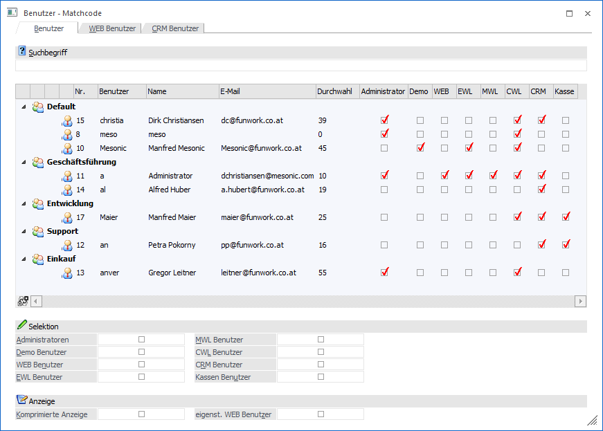
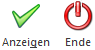

Wenn der Fokus in dem Feld "Benutzer" liegt und das Lupen-Symbol bzw. die Taste F9 gedrückt wird, dann öffnet sich das Programm "Benutzer - Matchcode". An dieser Stelle kann gezielt nach Benutzern gesucht werden.
Hinweis
Wenn in dem Feld "Benutzer" ein Teil der gesuchten Nummer oder des Namens eingetragen wurde und die Taste F9 gedrückt wird, dann wird diese Eingabe als Suchbegriff übernommen und die Suche direkt gestartet.

Das Fenster ist in die folgenden Register unterteilt, welche in den nachfolgenden Kapiteln detailliert beschrieben werden:
ü Register "Benutzer"
In dem
Register "Benutzer" werden alle WinLine Benutzer angezeigt, welche für den
aktuellen Mandanten eine Berechtigung aufweisen.
ü Register "WEB Benutzer"
In dem
Register "WEB Benutzer" werden alle angelegten WEB Benutzer angezeigt.
ü Register "CRM Benutzer"
In dem
Register "CRM Benutzer" werden alle nicht gesperrten Benutzer angezeigt, bei
welchen die Option "CRM Benutzer" aktiviert wurde. Zusätzlich müssen
Berechtigungen für den aktuellen Mandanten vorhanden sein.
Buttons

Ø Anzeigen
Durch Anklicken des Buttons "Anzeigen" bzw. durch Drücken der F5-Taste wird die Suche ausgelöst.
Ø Ende
Durch Anwahl des Buttons "Ende" bzw. der Taste ESC wird der Programmbereich geschlossen.